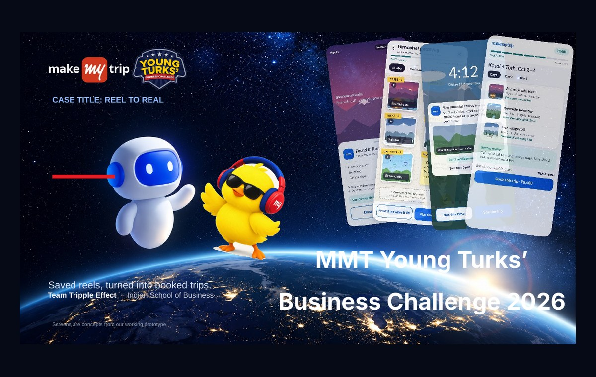
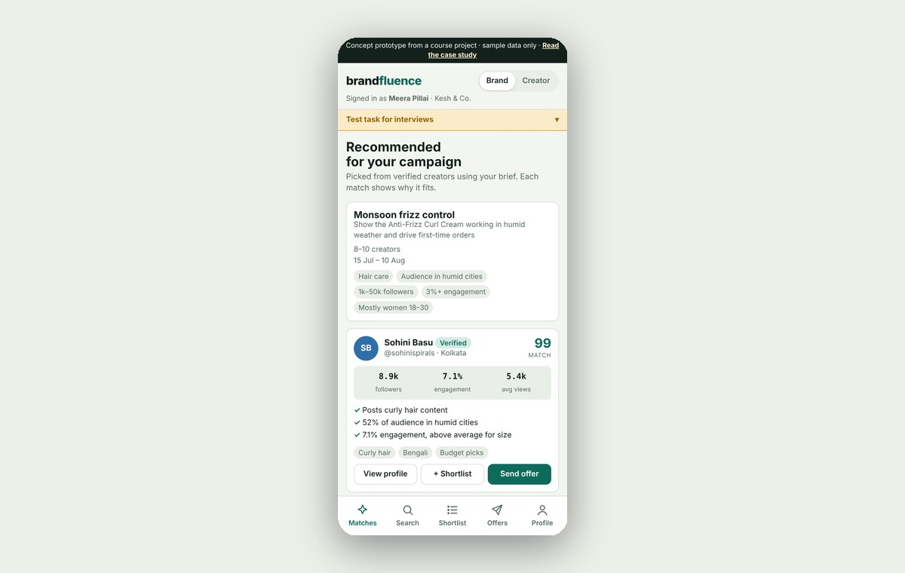
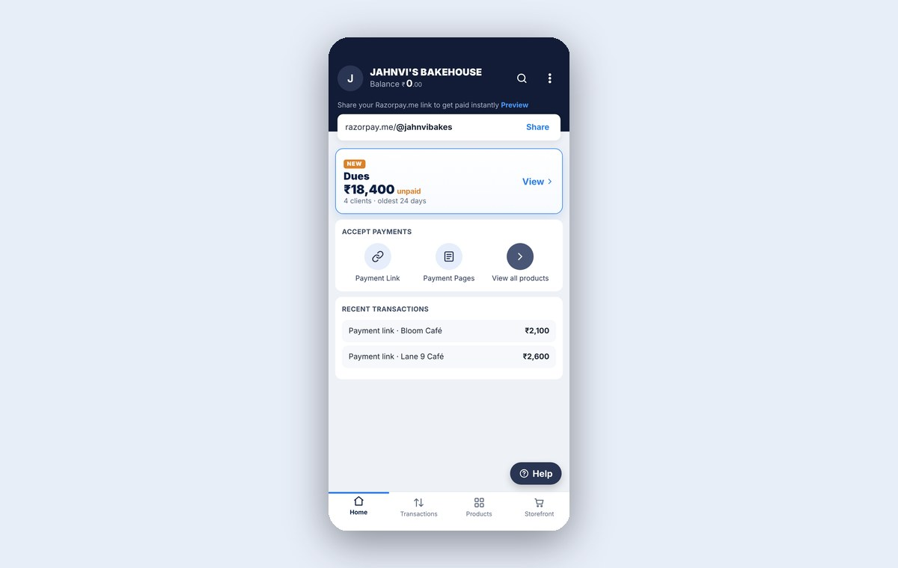
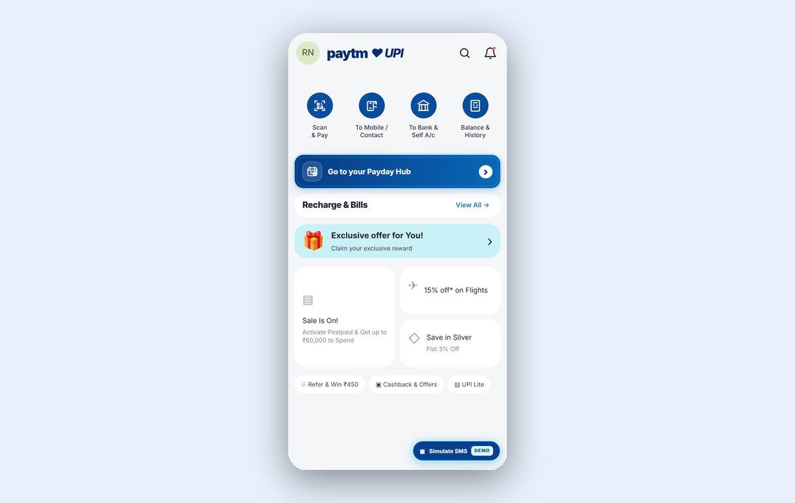

01 / PRODUCT STRATEGYTRIPPIEReel to realTrippie: Reel to Real
Turning saved travel inspiration into a living, bookable itinerary.
I’m an MBA student at ISB from Bangalore, with a background in computer engineering at UC San Diego and software engineering. I’m interested in building useful products by understanding people, problems and technology.
A few things I’ve worked on
Each project has its own story.

01 / PRODUCT STRATEGYTRIPPIEReel to realTurning saved travel inspiration into a living, bookable itinerary.

02 / DISCOVERYBrandfluenceThe right creator, not just reachHelping small Indian brands find nano-creators whose audiences fit.

03 / FINTECHDuesMake getting paid feel simplerA collections workflow that puts overdue payments and thoughtful nudges in one place.

04 / MOBILE UXPayday HubYour bills, on your termsA simpler way to pay recurring bills now or schedule a reminder for later.
 05 / UCSD PROJECTCreATEA better recipe routine
05 / UCSD PROJECTCreATEA better recipe routine 06 / UCSD PROJECTSociusQRYour profile, one scan away
06 / UCSD PROJECTSociusQRYour profile, one scan away